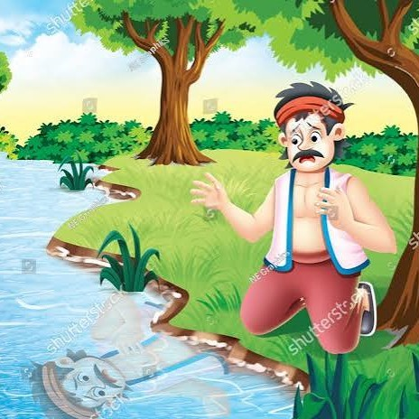

Honesty is the best policy.

Once upon a time, there lived a poor woodcutter near a forest. Every day, he cut wood and sold it in the nearby village to earn his living. One morning, he was cutting a tree beside a river. Suddenly, his axe slipped from his hands and fell into the deep water. The woodcutter became very sad because it was his only axe. He sat beside the river and began to cry. Just then, a fairy appeared. She asked kindly, "Why are you crying?" The woodcutter told her what had happened. The fairy dived into the river and returned with a beautiful golden axe. She asked, "Is this your axe?" The woodcutter replied, "No, it is not mine." The fairy smiled and went back into the river. This time, she brought a shining silver axe. Again she asked, "Is this your axe?" The woodcutter answered honestly, "No, that is not mine either." Finally, the fairy returned with an old iron axe. The woodcutter's face lit up with joy. "Yes! That is my axe." The fairy was pleased by his honesty. She gave him his iron axe and rewarded him with the gold and silver axes as well. The woodcutter thanked the fairy and returned home happily. From that day onward, everyone admired him for his honesty.
Honesty is the best policy.